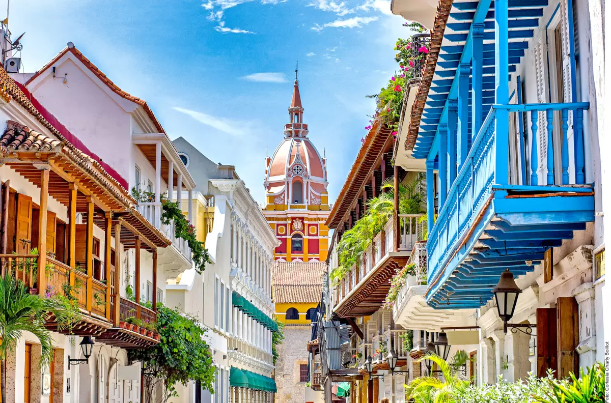
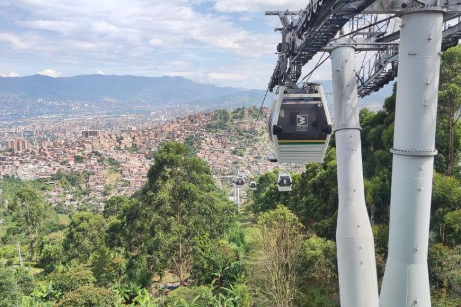
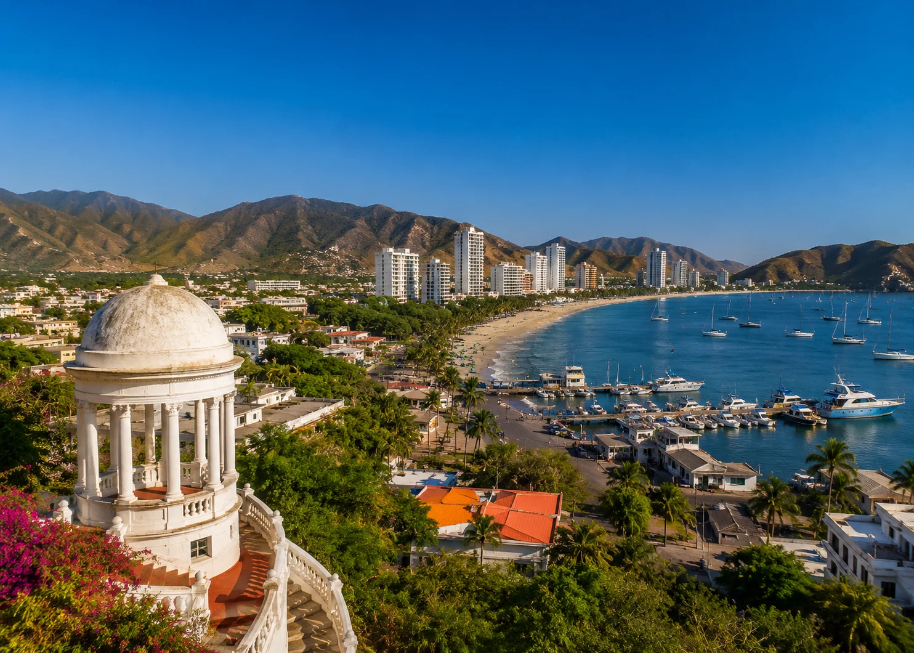
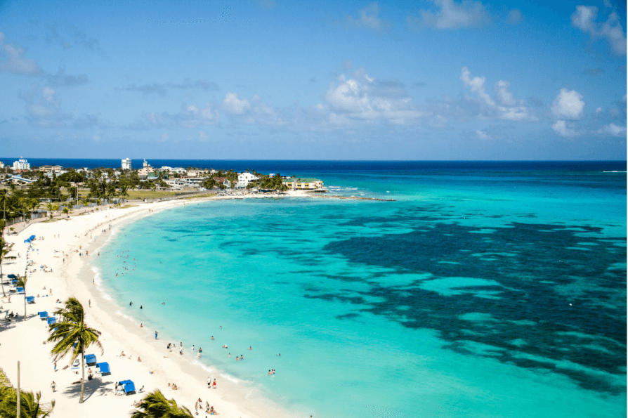
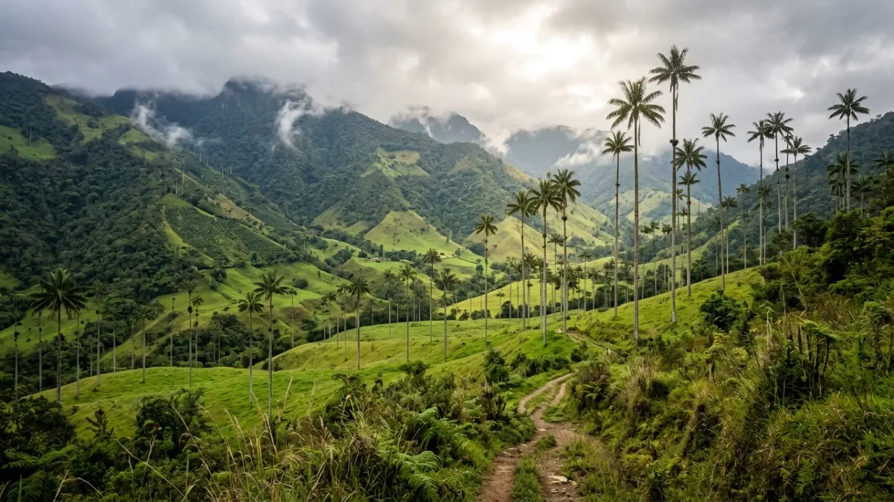
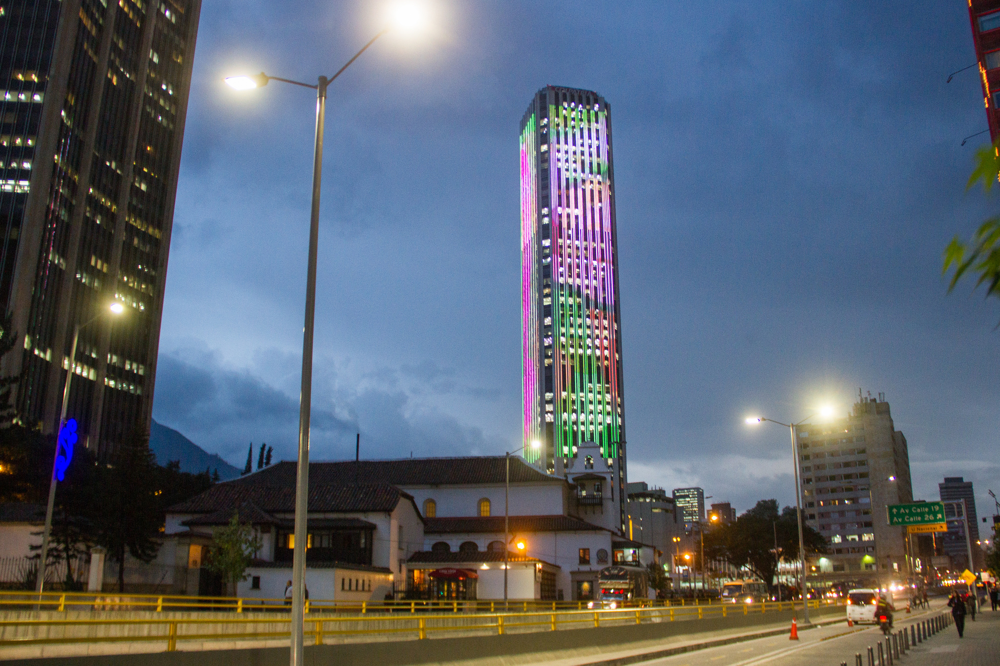
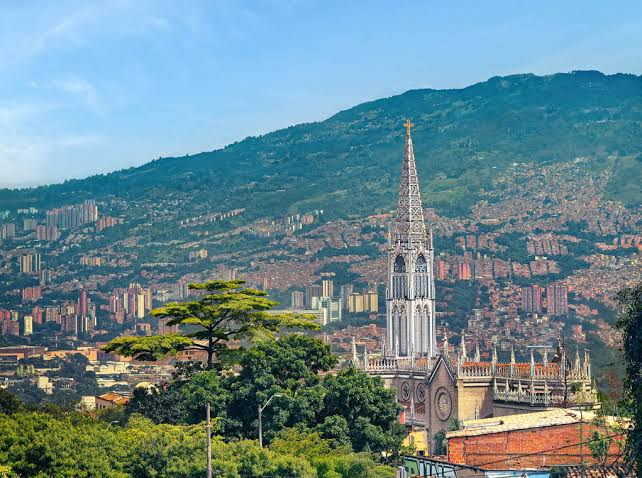
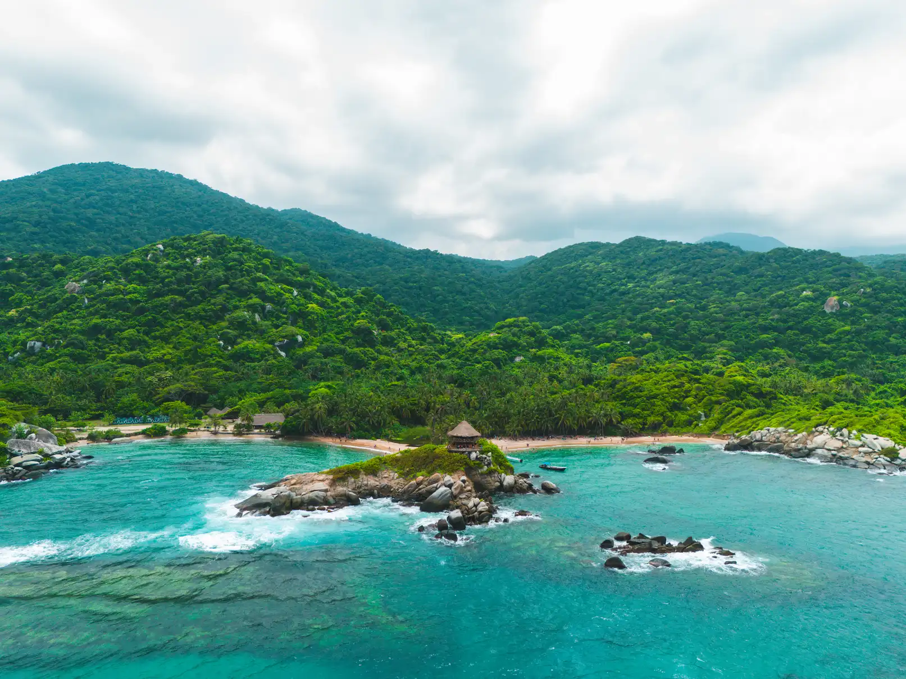
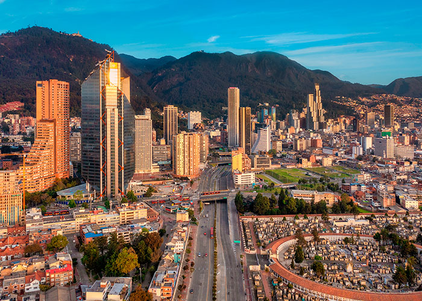
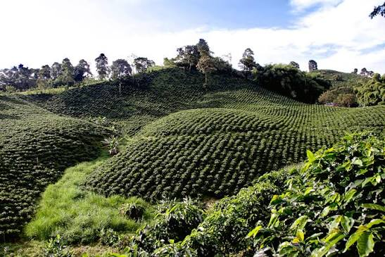

Destinos

Cartagena
La joya del Caribe. Déjate enamorar por su imponente muralla, sus calles coloniales llenas de color y sus atardeceres mágicos.

Medellín
Explora la ciudad de la eterna primavera: un valle lleno de flores, metrocables e historias de resiliencia.

Santa Marta
La magia de tenerlo todo. Un paraíso caribeño donde las playas de aguas cristalinas se encuentran con la imponente Sierra Nevada y la biodiversidad del Parque Tayrona.

San Andrés
Un paraíso tropical en medio del Caribe. Famosa por su mar de siete colores, sus barreras de coral perfectas para el buceo y su ambiente relajado al ritmo del reggae.

Eje Cafetero
El corazón verde de Colombia. Descubre el hogar del mejor café suave del mundo, sus tradicionales pueblos coloridos y las majestuosas palmas de cera en el Valle de Cocora.

Bogotá
La vibrante capital del país. Una metrópolis que fusiona historia colonial en La Candelaria, arte urbano, gastronomía internacional y una vista espectacular desde Monserrate.
Galería



